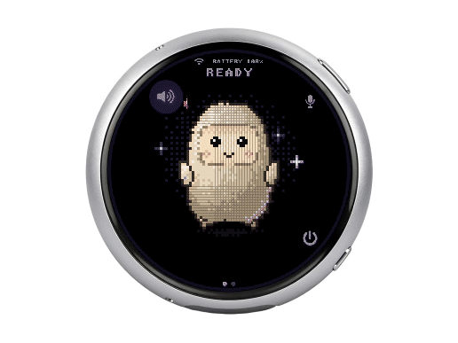

先解决回答看不全的问题
The Verge的Sean Hollister在十月三十一日发表自己的开发板实作，给Muse入口补上对话历史和语音回答。这里的新材料是一次个人改装，而不是零售挂件的正式测评。对很小的屏幕，回复是否能完整查看，会直接影响用户还要不要掏出手机。可以把一个简单任务作为设计起点：按住提问、知道什么时候结束收音、看到处理中状态、读完答复、需要时再次查看。每一步都应有可辨认的反馈；可爱的角色可以陪伴这些动作，但不能替代它们。
Muse Gadgets / Waveshare 1.75C DIY · DIY软硬结合 · 媒体实作

The Verge的Sean Hollister在十月三十一日发表自己的开发板实作，给Muse入口补上对话历史和语音回答。这里的新材料是一次个人改装，而不是零售挂件的正式测评。对很小的屏幕，回复是否能完整查看，会直接影响用户还要不要掏出手机。可以把一个简单任务作为设计起点：按住提问、知道什么时候结束收音、看到处理中状态、读完答复、需要时再次查看。每一步都应有可辨认的反馈；可爱的角色可以陪伴这些动作，但不能替代它们。
Waveshare资料确认这块板能呈现头像和Muse图片，提供触控与按住说话，使用板载麦克风、扬声器，并要求Muse手机应用和SDK令牌配对。官方设备表列出一点七五英寸、四百六十六见方的AMOLED触屏，以及三十二MB闪存和八MB额外内存。这是一套把输入输出接到服务的开发硬件，不能因为放在口袋里，就写成在本机运行大型模型。选板时也要核对完整型号；同尺寸或相似外壳不保证显示驱动、音频和固件配置相同。
Muse Gadgets提供ESP32和Linux两类SDK，官网将设备代码与固件列为Apache二点零许可。它允许用户把显示、按钮、传感器或其他自建装置接入已有服务；这些是扩展接口，不是买来就具备的全部家庭控制能力。做个人项目时，适合先保留原固件与可恢复版本，每次只增加一个动作，检查按钮是否仍能中止或返回。让编码助手生成一段程序，减少的是开始写代码的门槛，后续仍要理解错误如何出现，以及哪些设置会在重启后保留。
与手机相比，多一块挂件也多了充电、配对和维护，所以功能选择比功能数量更重要。可以先做一个随手能完成的小动作，例如把一条回答留在屏幕上供稍后查看，观察它是否真的减少解锁手机。家庭设备控制则应另设确认与失败反馈，不能因为聊天已经返回一句话，就认定外部动作完成。网络不可用或服务等待时，也要留下明确状态，而不是让角色持续动画却没有结果。本次没有审核作者代码、测量续航或验证长期稳定性；可编程性值得玩，但它与成熟消费品的持续可用性是两项需要分别验证的能力。